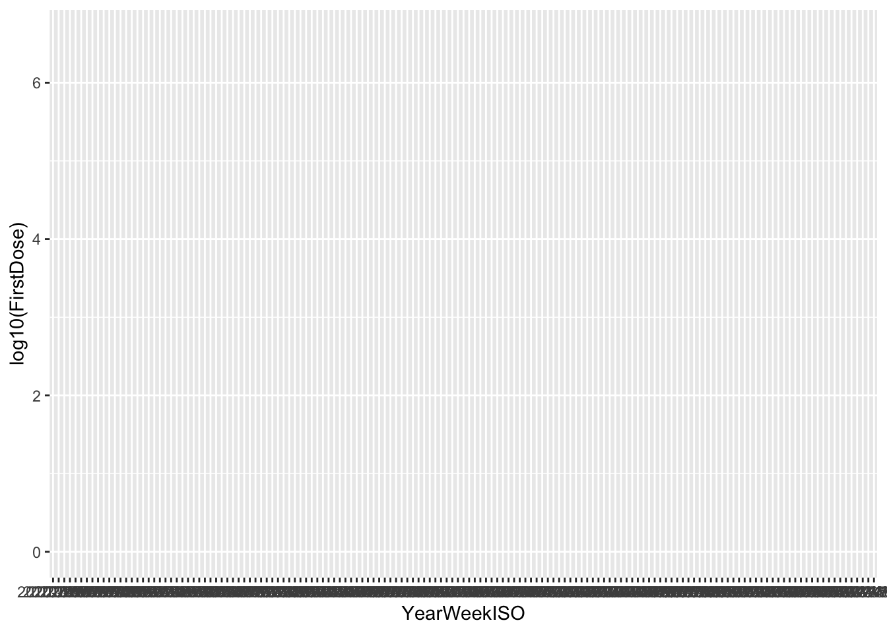
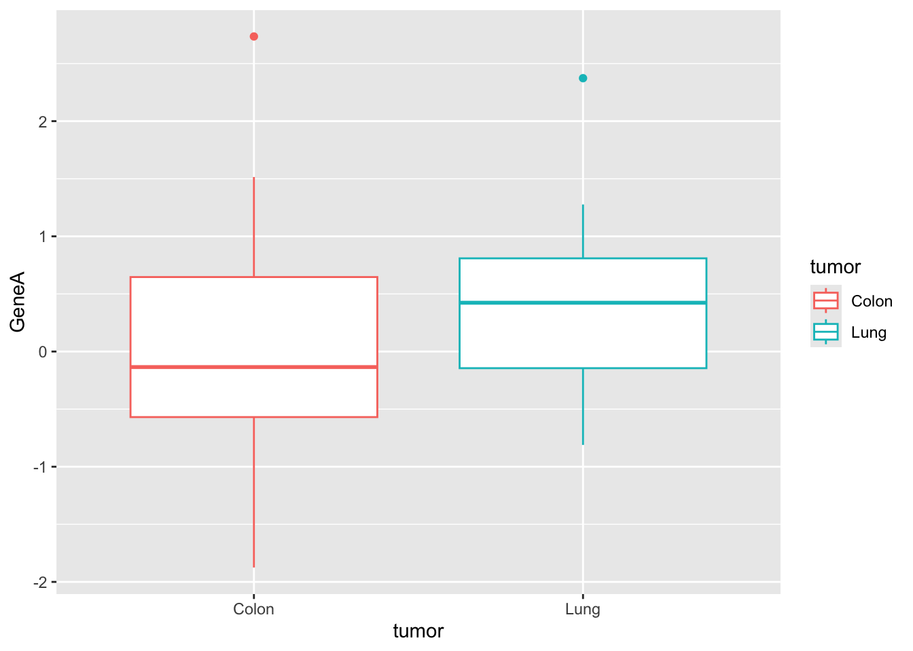
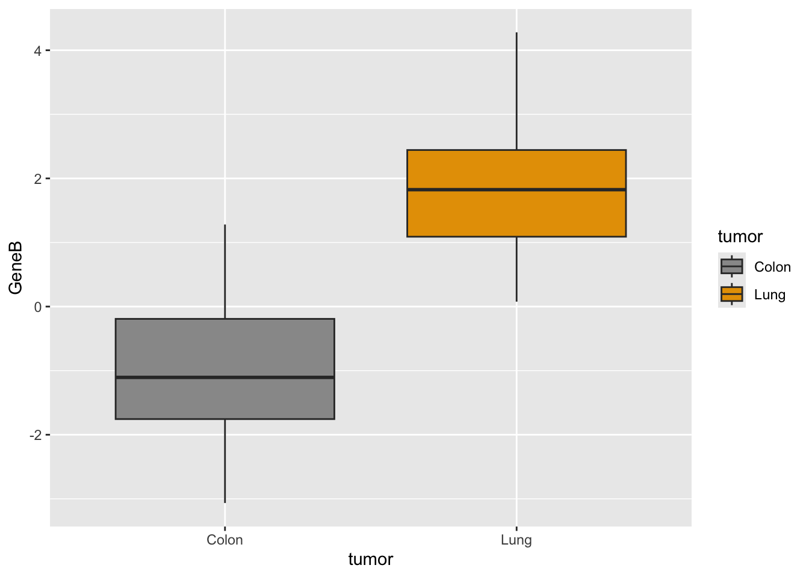
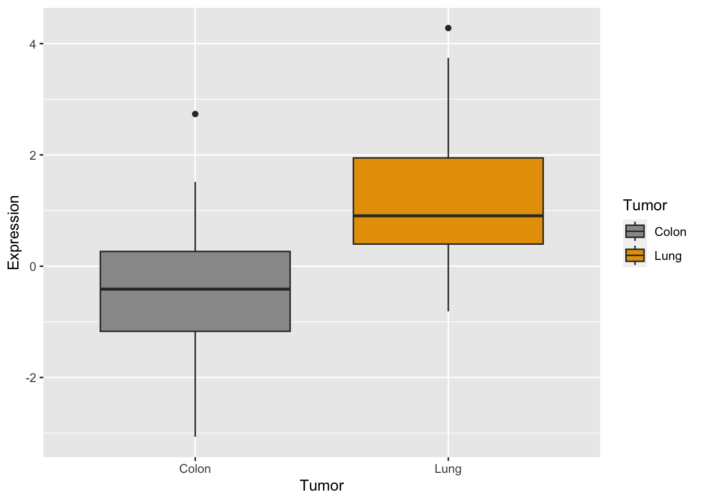
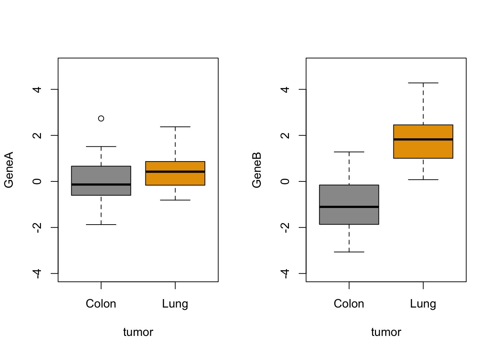
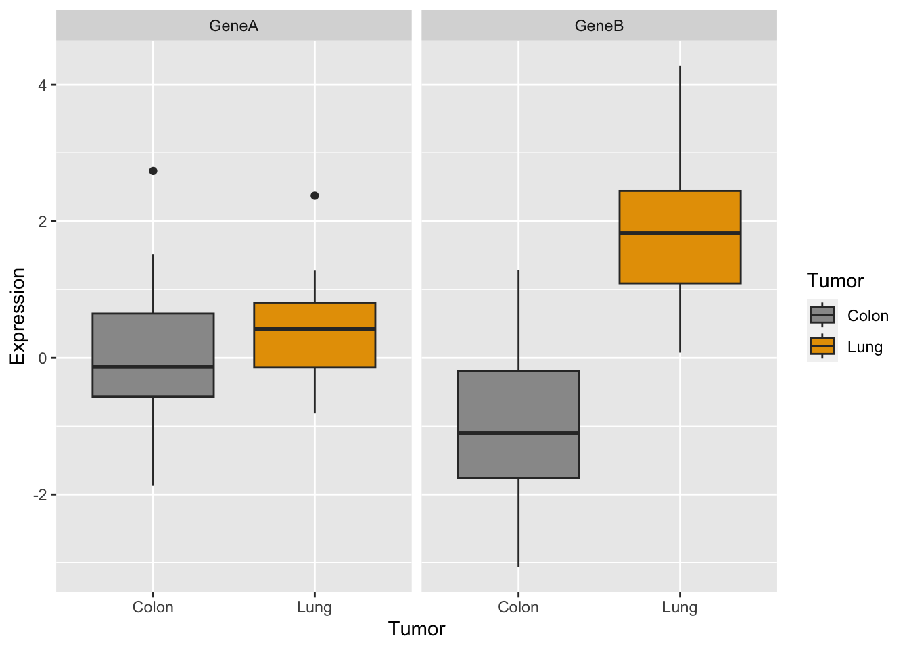
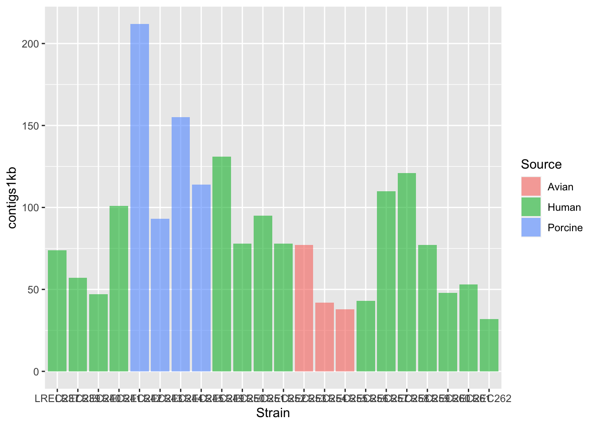
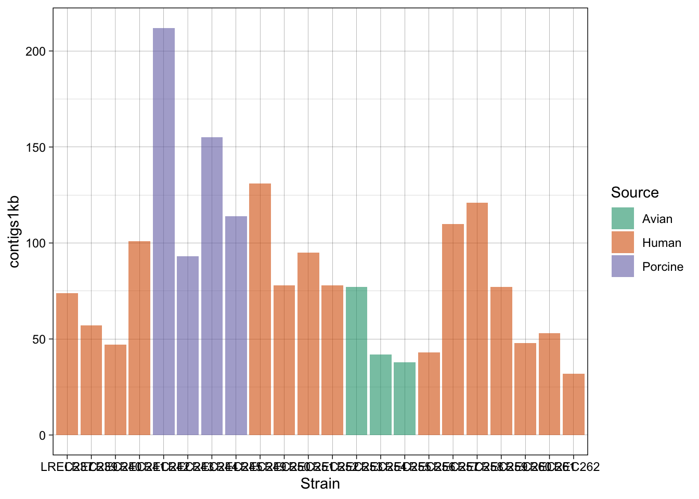
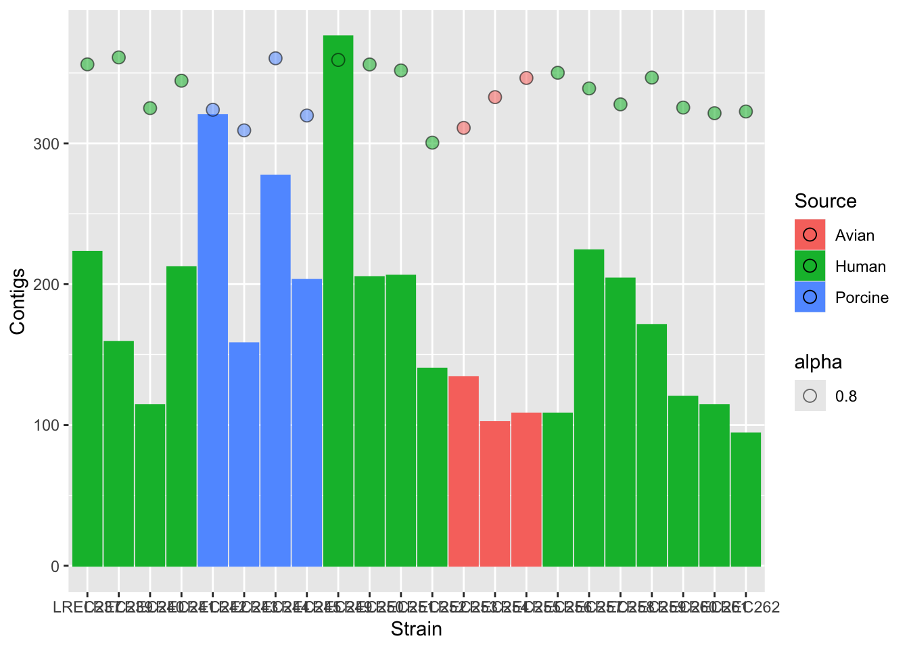
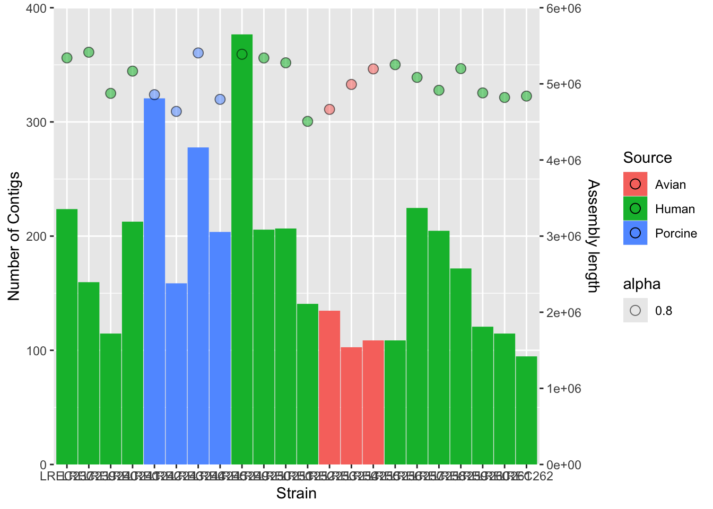

As we discussed in Lesson R5, exploratory data visualization is one of the greatest advantage of R. One can quickly go from idea to data to graph with a unique balance of flexibility and ease.
There are many graphing options available in R. You already know that the graphing capabilities that come with a basic installation of R are already quite useful. There are also a number of packages for creating advances graphs like grid, plotly, or lattice. In this course we chose to use ggplot2 because it is widely used and also the basis of many derivative packages for specific advanced plots. The main advantage of ggplot is that it breaks plots into components in a way that allows beginners to create relatively complex and aesthetically pleasing plots using an intuitive and relatively easy-to-remember syntax. Moreover, although we are not working on it, it belongs to the set of libraries tidyverse and it is very well integrated with them.
I must say that ggplot2 is generally less intuitive for beginners. However, once you get used to it, even if you have to look for help or examples to obtain your plots, you will find that ggplot is amazingly powerful and allows you to create perfect plot, with a high level of detail. This is because it uses a “graphing grammar” (see Wilkinson et al.2000), the gg of ggplot2. This is similar to the way that learning a language grammar can help you construct hundreds of different sentences from a small number of verbs, nouns, and adjectives, rather than memorizing each sentence. Similarly, by learning a small amount of the basic components of ggplot2 and the elements of its grammar, you will be able to create hundreds of different plots to represent the data exactly as the way you think it’s the best way or even better. As with any language, the grammar of graphics can be flexible and we may omit some elements o add more elements of the same type, just like we can add diverse kinds of complements (place, time…) to a sentence.
From a general perspective (see ref. 3), plots are composed of the data, the information you want to visualize, and a mapping, the description of how the data’s variables are mapped to aesthetic attributes. There are five mapping components (again from ref. 3):
A layer is a collection of geometric elements and statistical transformations. Geometric elements, geoms for short, represent what you actually see in the plot: points, lines, polygons, maps, etc. Statistical transformations, stats for short, summarize the data: for example, binning and counting observations to create a histogram, or fitting a linear model.
Scales or aesthetic map is required to map values in the data space to values in the space. This includes the use of colour, shape or size. Scales also draw the legend and axes, which make it possible to read the original data values from the plot (an inverse mapping).
A coord, or coordinate system, describes how data coordinates are mapped to the plane of the graphic. It also provides axes and gridlines to help read the graph. We normally use the Cartesian coordinate system, but a number of others are available, including polar coordinates and map projections.
A facet specifies how (usually a factor type vector) to break up and display subsets of data as small multiples. This is also known as conditioning or latticing.
A theme controls the finer points of display, like the font size and background colour. While the defaults in ggplot2 have been chosen with care, you may need to consult other references to create an attractive plot.
Let’s see all those element through some examples.
1.1 Example 1: Advanced plotting with ggplot in one line
Let’s start strong. We are going to generate a complex plot in one code line.
#load the datalibrary(data.table)vaccines<-fread('data/vaccines_EU_22oct2022.csv')#install & load ggplot2if(!require(ggplot2)) install.packages("ggplot2", dependencies =TRUE)
Loading required package: ggplot2
library(ggplot2)#step 1: create the plot objectggplot(data = vaccines)
There are some alternative ways to create the plot than are useful for more complex plots. You can also create an object in the RStudio environment.
p <-ggplot(data = vaccines)class(p)
[1] "gg" "ggplot"
Also, you will see on many websites the use of the pipe (|> or %>% with dplyr()) as the first argument. This is very convenient to combine ggplot with other tidyverse packages, although we are not using that syntax in the following examples.
p <- vaccines |>ggplot()
Now, we can add some data to generate a dot plot:
(p <-ggplot(vaccines, aes(x = YearWeekISO, y =log10(FirstDose), col=TargetGroup), stat=mean) )

What happened? Where are my points? We added the data and it allows to plot the axis, but we also need to add the type of plot, that is, the geometry layer. We usually build the final plot adding (just with +) more layers to the previous plot object.
That is, quite a complex plot in just one code line.
2 Diversity of plots with ggplot
2.1 Example 2: From R base plot to personalized ggplot
The use of ggplot is usually associate to great, gorgeous charts and plots. However, once you learn how to use it and how adapt and re-adapt code to your data, you will probably use ggplot for every graph.
#for ggplot it is more convenient to work with dataframesgenes <-data.frame(tumor,GeneA,GeneB)#basic plots#geneAggplot(genes, aes(x=tumor, y=GeneA,color=tumor)) +geom_boxplot()

#geneB with custom colorsggplot(genes, aes(x=tumor, y=GeneB,fill=tumor)) +scale_fill_manual(values=c("#999999", "#E69F00")) +geom_boxplot()

#together#we need to adapt dataset with stack()genes2 <-cbind(stack(genes[,2:3]),tumor)names(genes2) <-c("Expression","Gene","Tumor")#plotp <-ggplot(genes2, aes(x=Tumor, y=Expression,fill=Tumor)) +scale_fill_manual(values=c("#999999", "#E69F00")) +geom_boxplot()p #see the plot

Quick exercise
Do you remember how you did the boxplot in two panels with base R plots?
#define the setuppar(mfrow =c(1, 2)) #generate the two plotsboxplot(GeneA ~ tumor, col=c("#999999", "#E69F00"),ylim =c(-4, 5))boxplot(GeneB ~ tumor, col=c("#999999", "#E69F00"),ylim =c(-4, 5))

Now let’s try the same with ggplot:
How would you generate a two-panels boxplot for each gene with ggplot?

What do you think?
As we mentioned above, ggplot may seem more complicated but when you compare it’s a flexible and powerful way to obtain cool plots with one single line code.
For simple plots, the degree of difficulty and the time consumption of making them with base R plot functions like boxplot() or stripchart() or with ggplot() is very similar, but this is only the very tip of the ggplot iceberg.
Customization of your plot is very easy thanks to the themes, and other options, as in the examples below. Check for built-in ggplot themes: https://ggplot2.tidyverse.org/reference/ggtheme.html. Also, you can find some packages with custom themes and you can create your own theme (check this article by Emanuela Furfaro).
Now, let’s try some more cool example plots with these same data. Note the effect of the option position in the dotplots and how we can make different plots with the data, like density curves and violin plots.
r <-ggplot(genes2, aes(x=Gene, y=Expression,fill=Tumor)) +scale_fill_manual(values=c("#999999", "#E69F00")) +geom_boxplot()r +geom_dotplot(binaxis='y', stackdir='center',position=position_dodge(0.75))
Bin width defaults to 1/30 of the range of the data. Pick better value with
`binwidth`.
r +geom_point(pch =21, position =position_jitterdodge())
2.2 Example 3: Color palettes and other plot customization
When you have large datasets or several factors in your data, selecting the colors is not trivial. In R, there are defined color combinations or palettes that you can select in your plot. Moreover, there are also several packages that contain custom color palettes suitable for base plots and/or ggplots, like viridis or RColorBrewer. You may also find interesting the package ggsci, which contains palettes with colors used in scientific journals, data visualization libraries, science fiction movies…
To obtain the desired plot, you sometimes need to rotate the axis x labels, which must be done within a theme() argument. You can customize the label rotation, justification, font…
coli_genomes <-read.csv(file ='data/coli_genomes_renamed.csv', strip.white =TRUE, stringsAsFactors =TRUE)p <-ggplot(coli_genomes,aes(x=Strain, y=contigs1kb, fill=Source)) +geom_bar(stat="identity", position ="dodge", alpha=0.6) p

p2 <- p +scale_fill_brewer(palette ="Dark2") +theme_linedraw() p2

p2b <- p +scale_fill_brewer(palette ="Pastel2") +theme_linedraw() p2b
p3 <- p2 +theme(axis.text.x =element_text(angle =45,hjust =1, face ="bold"))p3
In the examples above, we generated a plot and then make variations with some custom palettes (p2). The palettes are available in ggplot, but in order to explore and edit them, you need to install the package. Also, in the plot p3, we modified the font and orientation of the axis labels using a new theme() layer, that contains the text personalizations.
As mentioned above, one of the most common palette packages is RColorBrewer. Let’s check it out.
Of course, you can also do it the same way than with Base plots:
svg("plot_p3b.svg")print(p3)dev.off()
quartz_off_screen
2
2.3 Example 4: Plotting multiple variables
One of the nice ways to summarize data is plotting more than one variable in the same plot. However, you should consider that different data may need different scale to be render in the same plot. Thus, you should scale up/down the data of one variable to the values of the second variable. Then, for the secondary axis, you just need to apply the same scaling factor in the opposite direction.
In the following example, we plot the number of Contigs and the Assembly length from our coli_genomes.csv.
#barplotplots2 <-ggplot(data=coli_genomes) +geom_bar(aes(x = Strain, y = Contigs, color = Source, fill = Source), stat="identity") #add the points and adjust the scale in the right axisplots2b <- plots2 +geom_point(aes(x = Strain, y = Assembly_length/15000, fill = Source, alpha=0.8),col="black",shape=21, size=3)plots2b

plots2c <- plots2b +scale_y_continuous(name ="Number of Contigs",limits =c(0, 400), expand=c(0,0), sec.axis =sec_axis(~15000* ., name ="Assembly length")) plots2c

#add colors and more customizationplots2custom <- plots2b +scale_fill_brewer(palette ="Set1") +scale_color_brewer(palette ="Set1") +theme_bw() +theme(axis.text.x =element_text(angle =45, hjust =1, face ="bold")) +guides(alpha ="none", color ="none") plots2custom
We did the plot in different stages, to check each of the variables and the scale of the secondary axis before apply the customization. As the two variables have different range of value, we need to scale them. In this example, we scale-down the data (/ 15000) and then scale-up the axis to show the real data (* 15000).
As you noticed, axis customization may entail adjust the limits with limits(), the axis expansion below and above those limits with expand(), and other aspects as the axis ticks withbreaks(). We also can add/remove a legend with the argument guides().
3 ggplot and beyond
As mentioned above, ggplot is already an standard and the base of many derivative packages. We are going to see a couple of examples, but there are many, including packages for specific tasks, like working with maps or sequences. We will see in the lesson R9 the packages ggmsa() and ggseqlogo().
3.1 Interactive plots
Another interesting application of ggplot is its use for the generation of interactive plots to be published on websites. One that you might find of interest is the package heatmaply, that generates interactive heatmaps. Further, I find awesome the use of the package plotly() for very quick upgrade of any plot as interactive.
The following object is masked from 'package:ggplot2':
last_plot
The following object is masked from 'package:stats':
filter
The following object is masked from 'package:graphics':
layout
Loading required package: viridis
Loading required package: viridisLite
======================
Welcome to heatmaply version 1.4.2
Type citation('heatmaply') for how to cite the package.
Type ?heatmaply for the main documentation.
The github page is: https://github.com/talgalili/heatmaply/
Please submit your suggestions and bug-reports at: https://github.com/talgalili/heatmaply/issues
You may ask questions at stackoverflow, use the r and heatmaply tags:
https://stackoverflow.com/questions/tagged/heatmaply
======================
#aggregate the data with xtabsmatrix <-xtabs( ~ coli_genomes[,4]+coli_genomes[,5])#xtabs objects must be converted into dataframes, but heatmaply requires a matrix...heatmaply(as.data.frame.matrix(matrix))
library(plotly)ggplotly(plots2custom)
4 References
R in action. Robert I. Kabacoff. March 2022 ISBN 9781617296055
R Graphics Cookbook: https://r-graphics.org/ (I recommend the Appendix A: Understanding ggplot).
1. The table coli_curve.csv contains the growth curves of three E. coli strains. Plot the curves as scatterplot and lines containing the 90% confidence interval for the three strains.
Tips.
Check the ggplot geomgeom_smooth() for the confidence interval.
Also, it would be better if you color the data by strains, but keep the information of each sample measure using, for instance, the point shape.
2. The table microbe_download.csv contains the data of worldwide human deceases associated with antimicrobial resistance, as indicated in the column Counterfactual (data from https://vizhub.healthdata.org/microbe/). Explore the data and use it to reproduce the following barplots.
Tips.
You will need to check geom_errorbar() for the first plot.
For the second plot, you will need to order the data by the total number of Deaths.
Also, adjust the plot margins in order to show all the x-axis labels.